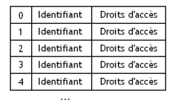
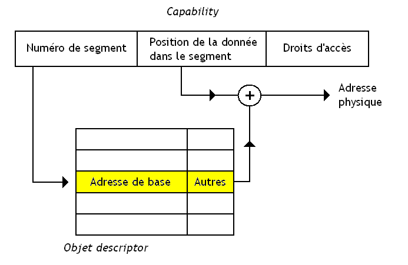
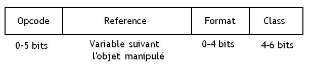
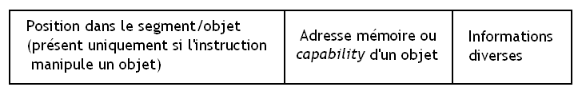

Si vous programmez depuis un certain temps, vous savez sûrement qu'il existe plusieurs paradigmes de programmation : le paradigme procédural, l'impératif, l'objet, le fonctionnel, etc. Chaque langage est plus ou moins rattaché à un (voire plusieurs) de ces paradigmes, et dispose de fonctionnalités plus ou moins diverses et variées. Mais ces langages ont pour but de créer des programmes exécutables par un ordinateur dont le matériel est plus ou moins évolué.
Au départ, les premiers ordinateurs étaient optimisés pour exécuter des langages de programmation impératifs très simples, et leur assembleur disposait de peu de fonctionnalités proches des langages de haut niveau : pas de support des tableaux, sous-programmes (les fameuses fonctions), et les types de haut niveau n'étaient pas supportés (pas de flottants ni de caractères, seul un type était accepté : le word). Au fil du temps, l'assembleur de ces processeurs et leur architecture ont évolué pour supporter les fonctionnalités de haut niveau dans leur assembleur : le nombre de types supportés par le processeur s'est étoffé, des instructions spéciales pour supporter les sous-programmes ont été inventées, et de nombreux modes d'adressage spécialement dédiés aux tableaux et structures ont fait leur apparition. Toutes ces améliorations ont fait que nos processeurs sont particulièrement adaptés à des langages procéduraux de haut niveau comme le C, le Pascal, le BASIC ou le Fortran.
Mais tous les processeurs existants n’ont pas forcément suivi cette logique et ne se sont pas adaptés qu'aux langages procéduraux. Par exemple, il existe de nombreuses architectures spécialement adaptées à l’exécution de langages fonctionnels ou logiques : les architectures dataflow. Certains fabricants de processeurs sont allés plus loin : dans les années 1980, quand la programmation orientée objet s'est démocratisée, des chercheurs ou des fabricants de processeurs ont décidé de créer des processeurs prenant en charge une bonne partie des fonctionnalités des langages de programmation orientés objet directement dans leur matériel. Cela a donné lieu à quelques petites architectures plutôt sympas, dont certaines ont quitté les laboratoires pour finir par être commercialisées. Ce tutoriel va explorer l'architecture de certains de ces processeurs orientés objet, afin de montrer comment ces processeurs se sont adaptés pour supporter ce paradigme objet. Nous allons aborder une classe d'architectures de processeur permettant d’implémenter directement dans le silicium des langages de programmation orientés objet : ce sont les fameux Capability Based Systems.
Pour commencer, nous allons voir les principes de base de ces processeurs orientés objet, et les différences qu'il peut y avoir avec les processeurs adaptés au paradigme procédural ou impératif. En réalité, le terme technique exact n'est pas « processeur orienté objet », mais Capability Based processor.
Processeurs normaux
Sur les processeurs normaux, on ne peut pas manipuler directement des objets : on est obligé de manipuler des données dont la taille est fixée une fois pour toutes par l'architecture du processeur. Un processeur peut généralement gérer des données de 8 bits (caractères ASCII), 16 bits, 32 bits, etc. Ces données peuvent être stockées dans divers endroits : notre ordinateur contient de nombreux composants capables de stocker des données, que l'on appelle des mémoires. Généralement, il existe deux à trois grandes mémoires : la mémoires RAM, les registres (intégrés dans le processeur), et les mémoires de stockage (par exemple, le disque dur).
Lorsque l'on souhaite manipuler une de ces données, on est obligé de spécifier dans notre programme la localisation de la donnée à manipuler : autrement dit, dans quelle mémoire et à quelle position dans la mémoire se situe la donnée. Spécifier la localisation de la donnée ne se fait pas de la même manière suivant que la donnée est dans la mémoire RAM, dans un registre, ou sur le disque dur. Par exemple, une mémoire RAM est constituée de blocs de mémoire, ou cases mémoires, de taille fixe (généralement 8 bits), chacun identifié par un nombre : son adresse mémoire. Ainsi, les instructions de nos processeurs peuvent manipuler des adresses mémoire sans trop de problèmes.
Processeurs orientés objet
Sur les Capability Based processors, la notion même d'adresses mémoire n'existe pas (ou presque). À la place, chaque donnée manipulée par le processeur est stockée dans un objet, placé quelque part dans la mémoire, sans que l'on ait de moyen de savoir où. Cet objet peut être absolument n'importe quoi : cela peut être un objet spécifié par le programmeur, ou des objets prédéfinis lors de la fabrication du processeur. Par exemple, on peut considérer chaque périphérique comme un objet, auquel on a défini des méthodes bien particulières qui permettront de communiquer avec celui-ci ou de le commander. Sur d'autres architectures, chaque programme en cours d’exécution est considéré comme un objet, avec des méthodes permettant d'agir sur son état. On peut ainsi stopper l’exécution d'un programme via des méthodes adaptées, par exemple. Mais ce qui va nous permettre d'adapter des langages de programmation orientés objet sur de telles architectures, c'est la possibilité de créer soi-même des objets non définis lors de la fabrication du processeur.
Capability
Au lieu d’utiliser des adresses mémoire et autres mécanismes divers et variés, chaque objet se voit attribuer un identifiant bien précis. Cet identifiant est unique à un objet (deux objets ne peuvent avoir le même identifiant), et il ne change pas au cours du temps : il est défini lorsqu'un objet est crée et ne peut être réutilisé pour un autre objet que lorsque l'objet possédant cet identifiant est détruit. En plus de cet identifiant, chaque objet se voit attribuer des droits d'accès : on peut ainsi interdire certaines manipulations dangereuses, ou limiter les droits d'accès à cet objet. L'identifiant et les droits d'accès sont rassemblés dans ce que l'on appelle une capability. Cette capability permet ainsi de nommer un objet, afin de pouvoir dire à notre ordinateur quel est l'objet à manipuler.
Les instructions de notre processeur ne manipuleront donc non pas des adresses mémoire, mais des capability : tout se passe comme si les capability remplaçaient les adresses mémoire. Contrairement aux processeurs adaptés au paradigme impératif ou procédural, cette capability ne dit strictement rien sur la localisation de la donnée en mémoire.
Un peu de typage
Sur ces architectures, il n'est pas rare que chaque capability ou chaque objet contienne des informations permettant de préciser le type d'un objet et permette à des instructions ou des fonctions d'avoir des comportements différents suivant l'objet manipulé. Dans ce cas, on dit que l'ordinateur est basé sur une tagged architecture.
Ces tagged architectures ne sont pas forcément des capability based architectures : de nombreux ordinateurs stockent des informations sur le type d'un objet dans celui-ci ou dans son adresse sans pour autant être des processeurs orientés objet : on peut par exemple citer le cas des machines LISP, optimisées pour le langage LISP. Ces tagged architectures permettent de supporter directement en hardware des fonctionnalités comme le typage dynamique et quelques autres fonctionnalités de certains langages de programmation (les unions, par exemple).
Souvent, la partie de l'objet ou de la capability spécifiant le type permet d'identifier certains types prédéfinis, mais peut aussi être configurée de façon à utiliser des types définis par le programmeur : sa signification dépendra alors de ce qu'a décidé le programmeur.
Capability list
La base de la programmation objet n'est autre que l'encapsulation : il est interdit de modifier directement les données d'un objet et les seules manipulations autorisées sur cet objet sont définies par un certain nombre de fonctions ou de méthodes bien précises. Ainsi, chaque objet ne peut être modifié que par certaines entités logicielles bien précises.
Nos processeurs orientés objet doivent donc contenir un moyen quelconque de faire en sorte qu'un objet ne puisse être manipulé que par les entités autorisées à le faire. Pour cela, chaque programme, fonction, ou tout autre entité logicielle qui peut être inventée, a accès à un certain nombre d'objets : elle peut manipuler certains objets et pas d'autres. Pour chacune de ces entités, les capability qui permettent d'identifier chacun de ces objets accessibles sont rassemblées dans une sorte de tableau de capability, que l'on appelle la capability list.

Lorsque l'on veut spécifier l'objet à manipuler, il suffit de dire à quel indice de ce tableau est localisée la capability de l'objet à manipuler.
C'est le seul moyen pour accéder à un objet : les capability pointant vers un objet ne sont pas disponibles dans les capability list des fonctions, programmes, etc. pouvant le manipuler. Ce mécanisme interdit donc à tout sous-programme ou programme de modifier un objet qu'il n'est pas autorisé à manipuler : si celui-ci n'est pas dans sa capability list, il ne peut pas y avoir accès. Avec ce genre de mécanisme, il devient difficile d’exécuter certains types d'attaques, ce qui est un gage de sureté de fonctionnement indéniable. Du moins, c'est la théorie : tout repose sur l'intégrité de chaque capability list : si on peut modifier celle-ci, alors il devient facile de pouvoir accéder à des objets auxquels on aurait pas eu droit.
Instructions d'appels de fonction pour le support de l'héritage et autres fonctionnalités
Divers mécanismes dépendants du processeur permettent d'implémenter l'héritage ou d'autres fonctionnalités objet en autorisant des manipulations, accès, copies ou partages temporaires de capability lists. Généralement, ce genre de fonctionnalité objet est géré directement au niveau des instructions du processeur : notre processeur contient pour ce faire des instructions spéciales.
Ces instructions sont souvent des instructions d'appels de fonction particulières. Pour ceux qui ne le savent pas, une instruction d'appel de fonction sert à demander au processeur d’exécuter une fonction bien précise. Sur les processeurs optimisés pour les langages procéduraux, une fonction est identifiée par son adresse, tandis que nos capability-based processors fournissent sa capability à l'instruction chargée d’exécuter notre fonction. Sur nos capability based processors, de nombreuses instructions d'appel de fonction sont disponibles : par exemple, l'instruction pour appeler une fonction définie dans la classe de l'objet qu'elle va manipuler ne sera pas la même de celle devant appeler une fonction héritée d'une autre classe (il faudra en effet faire quelques accès pour modifier ou accéder à des capability list extérieures, etc.).
Et comment on fait pour localiser les données ?
Seul problème : il faut bien accéder aux données de notre objet un jour ou l'autre, ce qui implique fatalement de savoir quelle est l'adresse de la donnée à manipuler. Pour cela, il faudra convertir notre identifiant d'objet en une adresse mémoire. Cette conversion dépend de la conception du processeur, aussi il sera difficile de faire des généralités sur le sujet. Néanmoins, on peut préciser que ces techniques s'appuient souvent sur une technique de gestion de la mémoire que l'on appelle la segmentation.
Nous allons commencer par aborder le processeur Rekursiv. Ne soyez pas perturbé par son nom : il ne s'agit pas d'une coïncidence, comme on le verra plus tard.
Histoire
Ce processeur fut inventé par la compagnie Linn Product, un fabricant de matériel Hi-Fi, qui voulait améliorer ses chaînes de production automatisées. Celles-ci fonctionnaient avec un ordinateur DEC VAX assez correct pour l'époque. Cette compagnie avait lancé un grand projet de rajeunissement de sa chaîne de production. Au tout début, le projet consistait simplement à créer de nouveaux outils logiciels pour faciliter le fonctionnement de la chaîne de production. Au cours de ce projet, un langage de programmation orienté objet, le Lingo, fut créé dans ce but. Mais les programmes créés dans ce langage fonctionnaient vraiment lentement sur les DEC VAX de l'entreprise. L'entreprise, qui n'avait pas hésité à créer un nouveau langage de programmation pour ce projet, prit ce problème de performances à bras le corps et décida carrément d'inventer un nouveau processeur spécialement adapté à Lingo. Décidément, ça ne rigolait pas en ce temps-là. :p Ainsi naquit le processeur Rekursiv, premier processeur orienté objet de son genre.
Un aperçu de l'architecture
Vu de loin, ce processeur ressemble à un processeur tout à fait normal. Un processeur est souvent découpé en plusieurs circuits bien distincts, chacun chargé d'effectuer des manipulations bien précises. Cela permet de faciliter sa fabrication et sa conception en le décomposant en morceaux que l'on peut créer indépendamment. Généralement, les processeurs assez évolués sont découpés en au moins trois grands circuits :
une unité de calcul, qui est un circuit chargé d'effectuer des calculs et de manipuler des données ;
un séquenceur qui est chargé de commander et de donner des ordres aux unités de calcul pour qu'elles effectuent ce qu'il faut ;
d'un circuit chargé de gérer la mémoire : la MMU ;
et parfois quelques circuits supplémentaires.
Notre processeur Rekursiv ne fait pas exception à cette règle, et il est découpé en quatre grands circuits principaux :
Numerik : l'unité de calcul ;
Logik : le séquenceur ;
Objekt : une MMU orientée objet ;
et Klock, une unité regroupant des circuits assez divers (des timers entre autres).
Le support du paradigme objet était géré par Logik et par Objekt, aussi nous verrons plus en détail leurs possibilités dans la suite de ce tutoriel. Mais nous n'allons pas passer sous silence Numerik et Klock, et en parler assez brièvement.
Klock
Klock est chargée de synchroniser les différents composants de ce processeur. Plus précisément, elle contient des timers, des composants permettant de mesurer des durées, et de quoi générer le signal d'horloge du processeur. Ce signal d'horloge a une fréquence d'environ 10 Mhz, ce qui n'était pas si mal pour l'époque.
Numerik
Numerik est le nom donné à l'ALU de ce processeur. Son jeu d'instructions est donc assez limité. On peut néanmoins dire que cette unité de calcul contient un circuit capable d'effectuer des multiplications ainsi qu'un barrel shifter, un circuit capable d'effectuer des instructions de décalage et de rotation. Cette unité de calcul est rattachée à 16 registres 32 bits, rassemblés dans un seul composant que l'on appelle un register file.
Numerik est capable de manipuler des nombres de 32 bits. Cette unité de calcul est un peu particulière : elle est formée de petites unités de calcul 4 bits, de marque AMD : des AMD2900, pour être précis. Ces unités de calculs AMD de 4 bits sont reliées entre elles pour former Numerik. Cette technique qui consiste à créer des unités de calcul plus grosses à partir d’unités de calcul plus élémentaires s'appelle en jargon technique du Bit Slicing.
La pile
Vous le savez sûrement, mais nos ordinateurs réservent souvent une partie de notre mémoire RAM (ou certains registres du processeur) pour stocker ce que l'on appelle la pile d'appels. Cette pile sert à stocker les différents paramètres, variables locales et autres informations un peu spéciales, qui permettent d’exécuter des fonctions.
Cela peut paraître bizarre pour ceux qui sont habitués aux architectures X86, mais ce processeur implémentait deux piles. Eh oui, deux piles ! Ces deux piles avaient des rôles bien ciblés : la première servait à stocker les paramètres d'une fonction/méthode et ses variables locales, tandis que la seconde servait à stocker l'endroit où reprendre dans notre programme une fois la fonction/méthode terminée (les adresses de retour) et à sauvegarder les registres du processeur utilisés par la fonction.
Logik
Rekursiv possède un grand nombre d'instructions machine plus ou moins évoluées. Par contre, Numerik contient de quoi exécuter un petit nombre d'instructions plus ou moins simples (additions, multiplications, et autres opérations arithmétiques et logiques simples), et ne peut pas faire plus. On pourrait croire que cela entre en contradiction avec la simplicité de l’unité de calcul, mais il n'en est rien. Les instructions de Rekursiv sont ce que l'on appelle des instructions micro-codées : il n'existe pas de circuits capables d’exécuter ces instructions dans le processeur. À la place, ces instructions sont émulées par une suite d'instructions exécutables par les unités de calcul du processeur que l'on nomme micro-opérations. Ces suites de micro-opérations sont stockées dans une petite mémoire de type ROM intégrée au processeur : cette mémoire s'appelle le Control Store.
Le Control Store de Rekursiv n'est autre qu'une mémoire d'environ 64 kibioctets. Elle possédait une petite particularité : on pouvait modifier son contenu si besoin. Et cette possibilité était poussée à l’extrême : il était parfaitement possible de reprogrammer le jeu d'instructions du processeur sans grandes restrictions. Cela pouvait même se faire à l’exécution : cela pouvait servir à adapter le jeu d'instructions à un langage particulier, voire l'adapter temporairement à un objet que l'on était en train de manipuler. L'ensemble des instructions du processeur (son jeu d'instructions) était donc programmable ! Bien évidemment, on pouvait malgré tout supprimer les changements effectués sur le jeu d'instructions du processeur pour revenir à son jeu d'instructions originel.
Ce processeur possédait même une petite particularité : on pouvait, de par l'organisation de son micro-code, créer des instructions récursives ! Ainsi, les instructions de copie ou de recherche dans un arbre ou une liste présentes dans son jeu d'instructions étaient codées via ce genre d'instructions récursives.
Le jeu d'instructions
Certaines des instructions du processeur étaient adaptées au paradigme objet et permettaient de gérer plus simplement les diverses fonctionnalités orientées objet au niveau du matériel. Ces instructions étaient toutes micro-codées, bien évidemment. Par exemple, il existait des instructions CREATE, chacune capable de créer un objet d'une certaine classe. Cette instruction n'était autre qu'un constructeur pour un certain type d'objet. Elle avait besoin de certaines données pour fonctionner (sa taille, son type et les valeurs initiales de ses attributs) qui étaient passés par la pile vue ci-dessus. Il existait aussi des instructions de transfert de messages entre objets (comme SEND), des instructions pour accéder à un champ d'un objet localisé sur la pile (GET), pour modifier un champ dans l'objet (PUT), et bien pire encore.
On peut signaler que ces instructions ne pouvaient opérer que sur certains types d'objets : certaines instructions ne pouvaient ainsi manipuler que des objets d'une certaine classe et pas d'une autre.
Le modèle mémoire
Mais ce qui fait que Rekursiv était un processeur orienté objet ne vient pas seulement de son jeu d'instructions : le principal intérêt de Rekursiv tient dans son unité chargée de gérer la mémoire.
Les capability de ce processeur était codées sur 40 bits. Lorsqu'une instruction devait manipuler un objet, elle demandait à la MMU d’accéder à l'objet via sa capability. Objekt, la MMU, se chargeait alors de convertir cette capability en une adresse mémoire de façon transparente pour les instructions : seule la MMU manipulait des adresses mémoire. La MMU stockait diverses informations sur chaque objet : ainsi, la MMU pouvait retrouver l'adresse mémoire de l'objet, son type, et sa taille à partir de l'identifiant. Ces informations étaient stockées dans la mémoire.
Un objet gardait en permanence la même capability : elle lui était attribuée à sa création (lors de l'appel de son constructeur) pour une libération ultérieure lors de la destruction. Cela permettait une chose assez sympathique : on pouvait déplacer l'objet dans la mémoire, son identifiant restait le même (alors que son adresse mémoire changeait).
Objekt implémentait un Garbage Collector matériel assez simple, mais suffisamment efficace. Pour rappel, un garbage collector, ou ramasse-miettes, est un programme ou un système matériel qui se charge de supprimer de la mémoire les objets ou données dont on n'a plus besoin. Dans certains langages de programmation comme le C ou le C++ , on est obligé de libérer la mémoire à la main. Ce n'est pas le cas pour certains langages orientés objet, comme JAVA ou Lingo : un garbage collector permet de gérer la mémoire automatiquement, sans demander au programmeur de se fatiguer à le faire lui-même (du moins, en théorie). Ce garbage collector avait souvent besoin de déplacer des objets pour faire un peu de place en mémoire, et compacter les objets ensemble, pour faire de la place. Le fait que les objets soient manipulés avec une capability facilitait énormément le travail du garbage collector matériel.
De même, la MMU pouvait décider de déplacer un objet sur le disque dur sans que le programme manipulant cet objet ne s'en aperçoive. Ainsi, si notre programme avait besoin de mémoire, la MMU pouvait déplacer un ou plusieurs objets sur le disque dur pour faire de la place. En cas de besoin, la MMU pouvait alors récupérer cet objet et le copier dans la RAM depuis le disque dur toute seule, sans demander à un quelconque système d'exploitation de le faire à sa place.
Un échec commercial
Rekursiv était au départ prévu pour être utilisé sur des stations de travail Sun 3. Mais malgré ses nombreuses qualités, Rekursiv ne s'est pas beaucoup vendu dans le monde : à peine 20 exemplaires furent vendus. La majorité des acheteurs étaient des chercheurs en architecture des ordinateurs, et rares furent les entreprises qui achetèrent des processeurs Rekursiv. Il faut dire que ce processeur était relativement spécialisé et difficile à utiliser, sans compter que d'autres processeurs concurrents firent leur apparition, comme l'Intel 432. Ce processeur fut donc un échec commercial retentissant, malgré une réussite technique indéniable.
Passons maintenant à un autre processeur orienté objet un peu plus connu : l'Intel iAPX 432. Oui, vous avez bien lu : Intel a bel et bien réalisé un processeur orienté objet dans sa jeunesse. La conception du processeur Intel iAPX 432 commença en 1975, afin de créer un successeur digne de ce nom aux processeurs 8008 et 8080.
Le modèle mémoire
Ce processeur utilisait ce que l'on appelle la segmentation pour définir ses objets. Cette technique consiste à découper notre mémoire en gros blocs de mémoire que l'on appelle segments. Généralement, on ne découpe pas ces blocs n'importe comment : on préfère que ce découpage soit logique et reflète un peu l'organisation du programme que l'on est en train de découper en segments.
Segments et objets
Sur l'Intel iAPX432, chaque objet était stocké dans un segment : toutes ses données et autres informations permettant de déterminer intégralement l'état d'un objet étaient regroupées dans un de ces segments. Chacun de ces segments est découpé en deux parties de tailles égales : une partie contenant les données d'un objet, et des informations supplémentaires destinées à gérer l'objet correctement. Ces informations pouvaient être des capability pointant vers d'autres objets (pour créer des objets assez complexes), par exemple. Au fait : sur ce processeur, les capability sont appelées des Access Descriptors.
Sur l'Intel iAPX432, chaque segment (et donc chaque objet) pouvait mesurer jusqu'à 64 kibioctets : c'est très peu, mais suffisant pour stocker des objets suffisamment gros pour que cela ne pose pas vraiment de problèmes. Notre processeur pouvait gérer jusqu'à 2^{24} segments différents. Chacun de ces segments peut être placé n'importe où en mémoire physique. Un segment n'a donc pas d'adresse bien fixée en mémoire physique et peut être déplacé comme bon nous semble. Mais par contre, l'organisation, la place des données dans un segment n'est pas modifiée.
Pour le désigner, chacun de ces segments se voit attribuer un numéro qui permet de l'identifier parmi tous les autres : ce numéro de segment permet ainsi d'identifier un segment, et donc l'objet qui est stocké dedans. On comprend aisément qu'un objet est donc identifié par le numéro du segment qui lui est attribué, et que ce numéro fait partie de l'identifiant, de la capability de l'objet. De même, on peut sélectionner une donnée à l’intérieur d'un segment en connaissant la place de la donnée dans le segment. Ainsi, l'identifiant d'un objet permet de localiser une donnée à l'intérieur d'un segment, et il est découpé en deux parties : une qui identifie le numéro du segment contenant la donnée, et une autre qui spécifie la position de la donnée dans notre segment.
Relocation
Chacun de ces segments peut être placé n'importe où en mémoire physique. C'est le premier avantage de la segmentation : un segment n'a pas d'adresse bien fixée en mémoire physique et peut être déplacé comme bon nous semble. Par contre, l'organisation des données dans un segment n'est pas modifiée.
Généralement, lorsque l'on veut charger un segment en mémoire à partir du disque dur, celui-ci sera placé quelque part en mémoire RAM, à une certaine adresse. C'est le système d'exploitation qui gère le placement des segments dans la mémoire physique : il décide où placer le segment dans la mémoire RAM.
Ainsi, le numéro d'un segment ne dit rien sur la place en mémoire physique du segment en question. C'est cette propriété qui est utilisée pour faire en sorte que nos capability ne puissent pas spécifier la place en mémoire physique d'un objet.
Object descriptor
Mais comment s'effectue cette traduction de la capability en adresse mémoire ?
Comme je l'ai dit plus haut, un objet est un segment, c'est-à-dire un morceau de mémoire qui commence à une certaine adresse (l'adresse de base). Chaque segment/objet se voit attribuer un numéro pour l'identifier, qui fait partie intégrante de la capability (enfin presque, disons plutôt que l'on peut déduire ce numéro à partir d'elle, mais passons ce genre de détails pour le moment).
Il nous faut donc se souvenir pour chaque segment (pour chaque objet, donc) de son adresse de base, l'adresse à laquelle il commence. Pour cela, la solution retenue sur ce processeur consiste à stocker, pour chaque objet, l'adresse à laquelle commence le segment qui le contient. Cette adresse, entre autres informations, est codée dans ce que l'on appelle un object descriptor qui pèse 128 bits.
Il contient entre autres la taille du morceau de segment qui contient les données, la taille du morceau de segment qui contient les capability de l'objet, l'adresse à laquelle commence le segment, quel est le type de l'objet, et beaucoup d'autres informations plus ou moins pertinentes.
Object table
Tous ces object descriptor sont stockés dans une table de correspondance qui permet de stocker l'object descriptor associé à chaque access descriptor (les capability). Cette table de correspondance, l'object table, est stockée en mémoire RAM et elle est consultée à chaque accès à un objet.

Pour déduire l'adresse mémoire du segment qui contient l'objet, il suffit de regarder la case de ce tableau d'objects descriptors qui correspond au numéro de segment indiqué par la capability : on trouvera alors l'object descriptor de l'objet contenu dans le segment ayant ce numéro, et on connaîtra son adresse de base. Il suffira alors d'ajouter la position de la donnée à cette adresse de base pour connaître l'adresse physique de notre objet/segment.
Il faut toutefois préciser que chaque programme possède son propre ensemble d'objets qu'il est le seul à pouvoir manipuler. Aussi, chaque object table n'est valable que pour un seul programme.
Support de la POO
L'Intel 432 est conçu pour permettre l'utilisation de « types », de classes de base, déjà implémentées dans le processeur, mais cela ne suffit évidemment pas à supporter la programmation orientée objet. Pour cela, le processeur permet de définir ses propres classes, utilisables au besoin, et définies par le programmeur.
Domain object
Notre Intel 432 permet, à partir de fonctions définies par le programmeur, de créer des domains objects, qui contiennent un ensemble de capability pointant chacune vers des fonctions. Chacune de ces fonctions peut accéder à un nombre restreint d'objets, tous du même type, et à rien d'autre. Chaque domain object est divisé en deux parties :
une partie publique, qui contient des capability identifiant les fonctions exécutables au besoin par tout morceau de code ayant accès au domain object ;
et une partie privée, qui contient des capability identifiant des fonctions/méthodes internes au domain object : seules les fonctions déclarées dans la partie publique possèdent des capability pointant vers ces fonctions et donc, seules ces fonctions de la partie publique peuvent les utiliser.
En clair, ces domains objects ne sont rien de moins que l'ensemble des méthodes d'une classe ! Chacun de ces domain objects possédait une capability rien que pour lui, qui permettait de l'identifier et que l'on devait utiliser pour accéder aux fonctions qu'il contient.
Évidemment, ce processeur supportait de nombreuses instructions et fonctionnalités permettant à des capability pointant vers des fonctions publiques d’être présentes dans des domains objects différents. Celles-ci pouvaient être paramétrées de façon plus ou moins fine afin de choisir quelles fonctions d'un domain object devaient être partagées ou non. Cela permettait de supporter des fonctionnalités objet telles que l'héritage, l'inheritance, etc.
De nombreux objets prédéfinis
Sur ce processeur, chaque processus est considéré comme un objet à part entière. De même, l'état du processeur (le programme qu'il est en train d’exécuter, son état, etc.) est défini par un objet, stocké en mémoire, qu'il est possible de manipuler : toute manipulation de cet objet permettra d'effectuer une action particulière sur notre processeur. Il en est de même pour chaque fonction présente en mémoire : elle était encapsulée dans un objet, sur lequel seules quelques manipulations étaient possibles (l’exécuter, notamment). Et ne parlons pas des appels de fonctions qui stockaient l'état de l'appelé directement dans un objet spécial. Bref, de nombreux objets système sont prédéfinis par le processeur : les objets stockant des fonctions, les objets stockant des processus, etc.
Typage des objets
Il est aussi possible pour le programmeur de définir de nouveaux types non supportés par le processeur, en faisant appel au système d'exploitation de l'ordinateur. Au niveau du processeur, chaque objet est typé au niveau de son object descriptor : celui-ci contient des informations qui permettent de déterminer le type de l'objet.
Chaque type se voit attribuer un domain object qui contient toutes les fonctions capables de manipuler les objets de ce type et que l'on appelle le type manager. Lorsque l'on veut manipuler un objet d'un certain type, il suffit d'accéder à une capability spéciale (le TCO) qui pointera dans ce type manager et qui précisera quel est l'objet à manipuler (en sélectionnant la bonne entrée dans la capability list). Le type d'un objet prédéfini par le processeur est ainsi spécifié par une suite de 8 bits, tandis que le type d'un objet défini par le programmeur est défini par la capability spéciale pointant vers son type manager.
Garbage collector
L'Intel 432 possédait dans ses circuits un garbage collector matériel. Pour faciliter son fonctionnement, certains bits de l'object descriptor des objets permettaient de savoir si l'objet en question pouvait être supprimé ou non.
Jeu d'instructions
Ce processeur est capable d’exécuter pas moins de 230 instructions différentes. Chacune de ces instructions peut manipuler des données de types divers : caractères ASCII, entiers, nombres flottants, tableaux, structures de données ou objets. Le processeur supporte certains objets de base, prédéfinis dans le processeur. Il fournit des instructions spécialement dédiées à la manipulation de ces objets, et contient notamment des instructions d'appel de fonction assez élaborées. Il contient aussi des instructions n'ayant rien à voir avec nos objets, qui permettent de manipuler des nombres entiers, des caractères, des chaînes de caractères, des tableaux, etc. Mais ces instructions sont un peu spéciales vu que le processeur ne contient strictement aucun registre capable de stocker des données : tout passe par la pile, que l'on a vue plus haut. Il s'agit donc d'une machine à pile !
Ce processeur contenait aussi des instructions spécialement dédiés à la programmation système et idéales pour programmer des systèmes d'exploitation. De nombreuses instructions permettaient ainsi de commuter des processus, faire des transferts de messages entre processus, etc. Environ 40 % du micro-code était ainsi spécialement dédié à ces instructions spéciales. Ces instructions chargées de prendre en charge le travail d'un système d'exploitation étaient des manipulations comme un changement de contexte ou un passage de message entre processus et se contentaient de faire des manipulations sur des objets représentant le processeur, des processus, ou d'autres choses dans le genre.
Beaucoup de ces instructions sont micro-codées, comme sur le processeur Rekursiv : on peut notamment remarquer que toutes les instructions permettant de faciliter la programmation de systèmes d'exploitation le sont. Mais les possibilités sont moindres : il n'est pas aussi simple de reprogrammer le micro-code du processeur pour ajouter des instructions, et de sérieuses limitations ont été posées pour éviter que n'importe quel programmeur puisse aller faire n'importe quoi dans le micro-code.
Encodage des instructions
On peut aussi préciser que ces instructions sont de longueur variable. Si vous ne le savez pas, une instruction est stockée en mémoire sous la forme d'une suite de bits bien précise. Pour chaque instruction, cette suite de bits contient un certain nombre de bits. Sur certains processeurs, la taille de cette suite de bits est fixe et ne change pas suivant l'instruction. Mais l'Intel iAPX 432 ne fonctionne pas comme cela : ses instructions ont un nombre de bits qui peut varier. Sur un processeur normal, les instructions ont une longueur qui est souvent multiple d'un octet, mais notre Intel iAPX 432 fait exception à cette règle : ses instructions peuvent prendre n'importe quelle taille comprise entre 10 et 300 bits, sans vraiment de restriction de taille.
Les bits représentant une instruction sont organisés d'une façon différente suivant le processeur. Sur l'Intel iAPX 432, ces bits sont regroupés en 4 grands blocs, 4 champs, qui ont chacun une signification particulière. Comme vous allez le voir dans un instant, l'encodage des instructions reflète directement l'organisation de la mémoire en segments : le jeu d'instructions a dû s'adapter à l'organisation de la mémoire.

Le premier champ s'appelle classe. Il permet de dire combien de données différentes l'instruction va devoir manipuler, et quelles seront leurs tailles.
Le second champ, le champ format, n'utilise que 4 bits et a pour but de préciser si les données à manipuler sont en mémoire ou sur la pile.
Le troisième champ, reference, doit être interprété différemment suivant la donnée à manipuler. Si cette donnée est un entier, un caractère ou un flottant, ce champ indique l'emplacement de la donnée en mémoire. Alors que si l'instruction manipule un objet, ce champ spécifie la capability de l'objet en question. Ce champ est assez complexe et il est sacrément bien organisé.

Le dernier champ s'appelle l'opcode et permet d’identifier l'instruction à effectuer : s'agit-il d'une addition, d'une création d'objet, d'un passage de message entre deux processus, d'une copie d'un objet sur la pile, etc.
Un échec commercial : le retour !
Eh oui, la tragédie qui a eu lieu avec Rekursiv s'est reproduite avec l'Intel 432 : il s'est très faiblement vendu.
Il faut dire que ce processeur avait des performances assez désastreuses et quelques petits défauts techniques qui l'empêchaient d'être performant. Par exemple, ce processeur ne contenait pas de mémoire cache : autant dire que ce processeur courait vraiment au casse-pipe ! On peut aussi citer le fait que ce processeur n'avait pas de registres : tout se faisait uniquement en mémoire RAM. Autre détail : ce processeur ne pouvait pas effectuer directement de calculs avec des constantes entières autres que 0 et 1 (une sombre histoire de mode d'adressage immédiat non supporté, bref). Et ces problèmes techniques ne sont que l'arbre qui cache la forêt...
De plus, celui-ci avait été conçu pour exécuter en grande partie le langage ADA, un langage de programmation orienté objet très sécurisé et très utilisé dans le domaine de l'embarqué pour ses qualités intrinsèques. Malheureusement, le compilateur qui traduisait les codes sources écrits en ADA en programmes compréhensibles par le processeur était assez mauvais et avait une certaine tendance à massacrer les performances. Sans compter que l'ADA n'était pas très populaire chez les programmeurs et n'était utilisé que par les militaires et les entreprises travaillant sur des systèmes embarqués ou critiques, ce qui n'a pas aidé à faire vendre ce processeur.
Qui sait, si ce processeur avait été plus performant, nous manipulerions tous des processeurs orientés objet de nos jours. :p
Voilà, cette introduction aux processeurs orientés objet se termine. Pour finir, je tiens à préciser qu'il existe d'autres processeurs orientés objet, bien que ceux-ci soient assez rares. Ce sont souvent des processeurs assez anciens, bien que quelques exceptions existent. Par exemple, il semblerait qu'il existe des projets de processeurs MIPS orientés objet du nom d'OOMIPS. Pour ceux qui veulent en savoir plus sur ces architectures, je conseille la lecture des liens suivants :